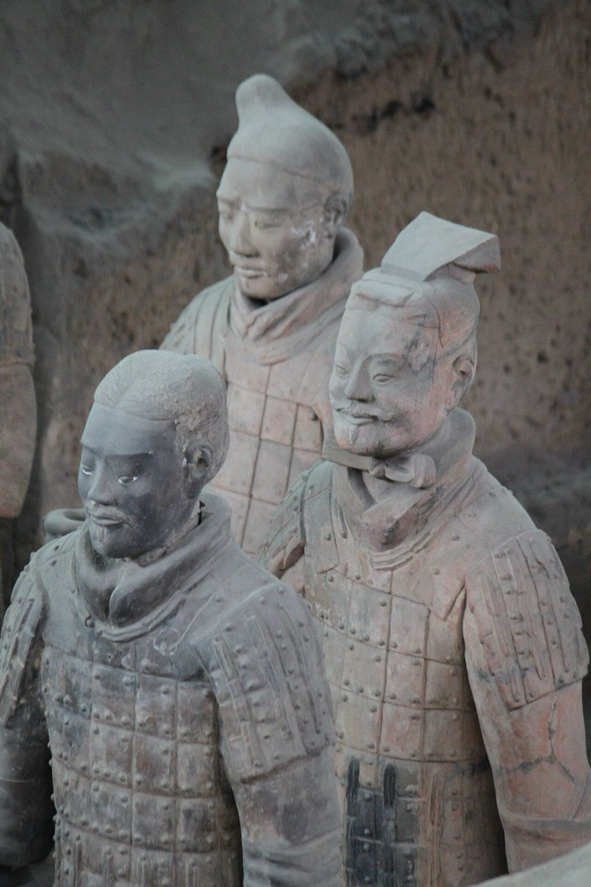
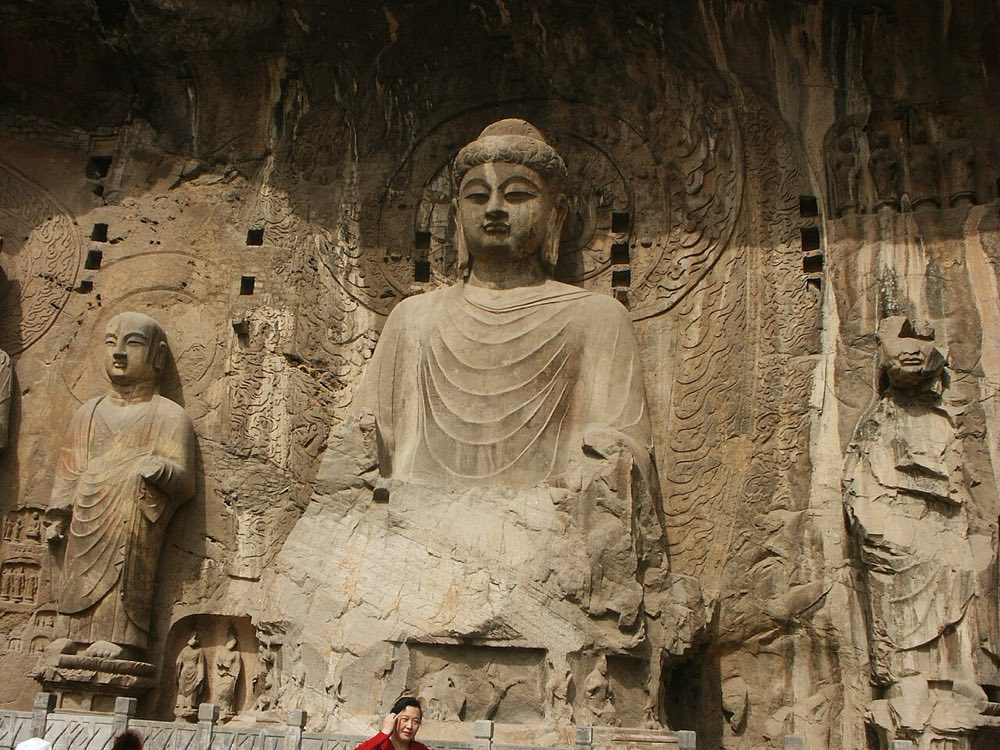
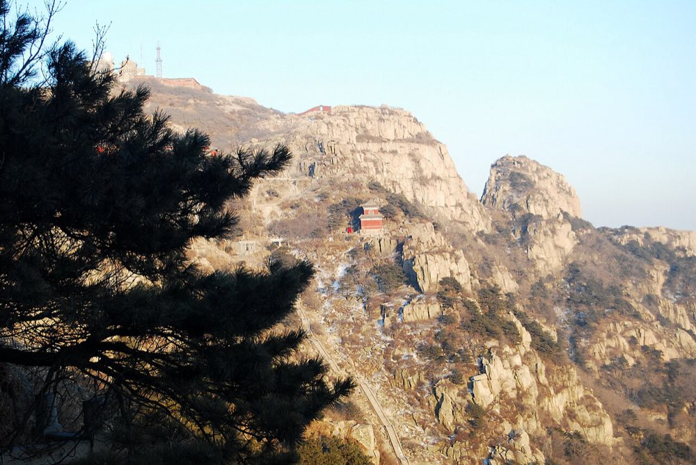

上海—内蒙古环线自驾
从上海出发三周的环线自驾：经南京、开封、洛阳、西安等古都，向北穿过黄土高原到内蒙古的沙漠与草原，再经山西石窟、泰山和孔子故里回到上海。
2026 年 11 月为 2027 年 5 月下旬至 6 月中旬的行程所做的调研。开放时间、价格和预约规则会变，出发前请再确认。车程和距离为估算，请以高德地图为准。

为什么选这条环线
一趟车就走过两千年的中国历史，而且一条路都不重复：兵马俑、龙门和云冈石窟、少林寺、悬空寺、泰山和曲阜，中间还有库布其沙漠和内蒙古草原，几乎每天都换一种地方菜。
5 月下旬至 6 月中旬： 中原炎热（河南、西安 30–35°C，热浪时局地可达 40°C），内蒙古白天 25–30°C、夜间凉爽，五台山夜里冷。草原一般在 6 月逐渐转绿（视降水而定）。2027 年端午节 6 月 9 日（周三）只放一天；若与高考（约 6 月 7–8 日，各省不同）重叠，考点附近有交通管制。
路线： 上海 → 南京 → 徐州 → 开封 → 洛阳 → 西安 → 延安 → 榆林 → 鄂尔多斯 → 呼和浩特 → 大同 → 五台山 → 正定 → 泰安 → 曲阜 → 淮安 → 扬州 → 上海。21 天，路线约 4,500 公里（含景点往返约 5,250 公里），每段车程最长约 3 个半小时，大城市住两晚。
亮点
- 兵马俑和西安城墙
- 龙门与云冈，中国三大石窟中的两处
- 成吉思汗陵、库布其沙漠和一天草原
- 悬在峭壁上的悬空寺和五台山的寺院
- 泰山，以及曲阜孔庙、孔府、孔林
- 美食之旅：南京鸭、开封夜市、西安面食、内蒙古羊肉、山西面食、淮扬菜和扬州早茶
须知
- 多个景点步行多、台阶多（兵马俑景区、龙门、悬空寺、泰山）：放慢节奏，能坐摆渡车和索道就坐，可在游客中心询问轮椅借用。
- 大部分重要景点都要用护照实名预约，各有不同窗口：云冈提前 1–7 天且不能约当天，陕历博提前 5 天 17:00 放票，五台山门票和车辆分开预约，悬空寺登临票分时段限量。带好护照原件；线上系统不一定支持护照，请预留人工窗口时间。
- 至少每 350 公里补一次电，到站保留 20–30%：内蒙古的服务区间距较大。
- 许多国家的护照现在可免签入境中国最多 30 天，请查询自己护照的规定。酒店入住时会为外国客人登记。
- 河南和西安的景点尽量早上去，避开高温。
两种玩法
💰 最划算
- 住： 每座城市的“划算”选择，四星或平台同等级（见住宿）。
- 吃： 在评分好的平价老店吃地方特色。
- 每人约 CNY 11,680–15,220 元 （21 天，含租车，不含到起点的交通）。
✨ 最佳体验
- 住： 有特色时选特色：古城里的院落酒店、用响沙湾沙漠度假酒店代替鄂尔多斯那晚（次日再开往呼和浩特）、五台山寺院景观酒店。
- 吃： 名店体验：洛阳水席、南京和淮扬宴席菜、草原烤全羊、扬州老字号早茶。
- 每人约 CNY 15,780–21,140 元。
两种玩法路线和天数相同，只是住宿和餐饮不同。
路线地图
● 带序号：按顺序的住宿城市 ● 开车日途经的景点或午餐。 ● 从住地出发的一日游（虚线）。点击地点可看是第几天。 路线按 OpenStreetMap 路网绘制，仅供参考。
行程：21 天 20 晚
每个开车日要么只开一段（早出发，赶到目的地吃迟午餐，下午只看景点），要么分上午、下午两段，中间停下吃午餐。去景点的短途不计。
上午
🚗 上海 → 南京 · 300 km · 3 小时 30
约 9:00 出发。
午餐
南京吃迟午餐：盐水鸭、鸭血粉丝汤。
下午
夫子庙，傍晚沿秦淮河散步。
上午
紫金山上的明孝陵和中山陵。
午餐
紫金山附近或市区午餐。
下午
南京博物院和一段明城墙。
⚡ 充电 今晚在酒店 （距上次充电约 320 km）
上午
🚗 南京 → 徐州 · 340 km · 3 小时 45
约 8:30 出发。
午餐
徐州吃迟午餐：饣它汤、烧羊肉。
下午
汉兵马俑和楚王陵崖墓。
⚡ 充电 前一晚在酒店或出发前 （距上次充电约 40 km）
⚡ 充电 今晚在酒店 （距上次充电约 340 km）
上午
🚗 徐州 → 开封 · 290 km · 3 小时 15
约 9:00 出发。
午餐
开封吃迟午餐：灌汤包。
下午
铁塔和大相国寺；晚上逛夜市。
上午
🚗 开封 → 少林寺（登封） · 160 km · 2 小时
约 8:30 出发。
午餐
在登封午餐，然后游少林寺和塔林。
下午
🚗 少林寺 → 洛阳 · 60 km · 55 分钟
晚上逛洛阳老城。
⚡ 充电 前一晚在酒店或出发前 （距上次充电约 350 km）
上午
开门即游龙门石窟（世界遗产）。
午餐
洛阳午餐：牛肉汤或水席。
下午
白马寺和洛阳博物馆。
上午
🚗 洛阳 → 华阴（华山） · 250 km · 2 小时 45
约 8:30 出发。
午餐
在华阴午餐，顺路看华山脚下的西岳庙。
下午
🚗 华阴 → 西安 · 130 km · 1 小时 30
黄昏上城墙；晚上在回民街吃饭。
⚡ 充电 前一晚在酒店或出发前 （距上次充电约 280 km）
⚡ 充电 在午餐地点 （距上次充电约 250 km）
上午
在秦始皇帝陵博物院从容游览一整天（一张票含两部分，需用护照提前预约）。约 8:00 出发去临潼（约 1 小时）。开门先看一号坑，再看三号坑、二号坑和陈列厅里的两乘铜车马。约需 3 小时，建议请持证讲解员或租用语音导览。
午餐
在临潼坐下来午餐，好好休息。
下午
乘园区摆渡车到西边约 1.5 公里的丽山园，即秦始皇陵本身。封土从未发掘，可看到绿树覆盖的封土堆，以及周边的石铠甲坑、百戏俑坑和文官俑坑。约需 1.5 小时，约 16:30 回西安休息。体力允许可顺路去旁边的华清宫；陕西历史博物馆仅在抢到票时前往。
上午
🚗 西安 → 黄帝陵 · 170 km · 2 小时
约 8:30 出发。
午餐
在黄陵午餐，然后参观黄帝陵。
下午
🚗 黄陵 → 延安 · 140 km · 1 小时 40
傍晚到延安；革命旧址明早再去（约 17:30 停止参观）。
⚡ 充电 前一晚在酒店或出发前 （距上次充电约 240 km）
上午
🚗 延安 → 榆林 · 270 km · 3 小时 10
8:00 参观杨家岭或枣园，约 10:30 出发穿越黄土高原。
午餐
榆林吃迟午餐：陕北羊肉、荞面饸饹。
下午
镇北台和榆林古城。
⚡ 充电 前一晚在酒店或出发前 （距上次充电约 330 km）
上午
🚗 榆林 → 成吉思汗陵 · 135 km · 1 小时 40
约 9:00 出发，进入内蒙古。
午餐
在伊金霍洛午餐：手把肉、奶茶；然后参观成吉思汗陵。
下午
🚗 伊金霍洛 → 鄂尔多斯 · 35 km · 35 分钟
晚上在鄂尔多斯（康巴什）。
⚡ 充电 前一晚在酒店或出发前 （距上次充电约 300 km）
上午
🚗 鄂尔多斯 → 响沙湾 · 90 km · 1 小时 10
约 8:30 出发。
午餐
库布其沙漠响沙湾，在景区午餐。
下午
🚗 响沙湾 → 呼和浩特 · 235 km · 2 小时 45
傍晚到呼和浩特。
⚡ 充电 在午餐地点 （距上次充电约 280 km）
上午
去草原（希拉穆仁或格根塔拉，约 100 公里）：骑马、蒙古族活动。
午餐
草原午餐：烤羊、奶茶。
下午
草原玩一整天；傍晚回呼和浩特，在大召寺一带吃晚餐。（也可住蒙古包，但不在预算内。）
⚡ 充电 今晚在酒店 （距上次充电约 255 km）
上午
🚗 呼和浩特 → 大同 · 210 km · 2 小时 35
上午游大召寺和内蒙古博物院（周一闭馆），约 11:30 出发。
午餐
大同吃迟午餐：刀削面。
下午
黄昏走城墙。
⚡ 充电 前一晚在酒店或出发前 （距上次充电约 200 km）
上午
开门即游云冈石窟（世界遗产）。
午餐
大同午餐：铜火锅或面食。
下午
华严寺和九龙壁。
上午
🚗 大同 → 悬空寺 · 85 km · 1 小时 25
约 7:30 出发。提前预约登临票；所有游客在恒山游客中心统一乘摆渡车。
午餐
游悬空寺，然后在浑源午餐。
下午
🚗 浑源 → 五台山 · 150 km · 2 小时 30
翻山而过；晚上在台怀镇。
⚡ 充电 前一晚在酒店或出发前 （距上次充电约 270 km）
上午
🚗 五台山 → 正定 · 210 km · 2 小时 45
早上先看显通寺和塔院寺，约 10:00 出发。
午餐
正定吃迟午餐。
下午
隆兴寺和正定古城。
⚡ 充电 前一晚在酒店或出发前 （距上次充电约 255 km）
上午
🚗 正定 → 济南 · 300 km · 3 小时 15
约 8:30 出发。
午餐
在济南午餐，顺路看趵突泉。
下午
🚗 济南 → 泰安 · 70 km · 1 小时
泰山脚下的岱庙。
⚡ 充电 前一晚在酒店或出发前 （距上次充电约 230 km）
⚡ 充电 在午餐地点 （距上次充电约 300 km）
上午
开门即坐索道上泰山。
午餐
泰安午餐：泰山豆腐宴。
下午
🚗 泰安 → 曲阜 · 75 km · 1 小时
傍晚参观孔庙（孔府、孔林明早）。
上午
🚗 曲阜 → 宿迁 · 260 km · 2 小时 55
8:00 参观孔府，再去孔林；约 10:30 出发。
午餐
在宿迁（项羽故里）午餐。
下午
🚗 宿迁 → 淮安 · 100 km · 1 小时 15
晚上吃淮扬菜，逛大运河。
⚡ 充电 前一晚在酒店或出发前 （距上次充电约 195 km）
⚡ 充电 在午餐地点 （距上次充电约 260 km）
上午
🚗 淮安 → 扬州 · 170 km · 2 小时
约 8:30 出发。（中国大运河博物馆需在扬州多住一晚。）
午餐
扬州：瘦西湖，早点吃扬州点心和炒饭。
下午
🚗 扬州 → 上海 · 260 km · 3 小时
傍晚到家。
⚡ 充电 在午餐地点 （距上次充电约 290 km）
自驾与充电
- 在中国开车需要中国驾照。外国游客可凭护照和驾照翻译件到车管所办理临时驾驶许可（最长 3 个月）；国际驾照不被认可。
- 第二司机：长途环线最好有两位司机。每位司机都要有自己的中国驾照或临时驾驶许可（在租车公司所在城市办理，须在出发前办好），并写进租车合同，否则保险可能不赔。
- 租车：取得一份书面报价，写明具体车型、21 天总价、里程上限与超里程费、押金与预授权、保险免赔额、第二司机费用、ETC 过路费结算、充电卡、边境区域限制及故障换车规则。部分公司把 7–27 天按周租计价，而非月租。
- 手机和支付：抵达后凭护照办一张中国 +86 手机卡（多数充电和预约 App 需要国内号码），保留本国号码接收银行验证码。出发前用外卡开通支付宝和微信支付并小额测试；微信外卡账户在完成实名认证前单笔上限 3,000 元、每年 15,000 元。另备第二张卡和少量现金。
- 理想超充：单枪 5C 桩只服务理想及通过认证的高压车型；双枪桩和 2C 桩对符合国标的新能源车开放，可用支付宝或微信扫码支付。
- 按 2024 年全国规定，酒店不得以无涉外资质为由拒绝接待境外人员，但小城前台执行不一：请书面确认六本护照、三间房、大型 MPV 停车和是否有充电桩。
- 车型：大型六座电动 MPV，如理想 MEGA、极氪 009 或腾势 D9。MEGA 和 009 是纯电，续航长、充电快（MEGA 在主要高速上有理想自建超充站）。D9 还有插电混动（DM-i）版本，有燃油备用，偏远路段最稳妥。用车机导航或高德的充电桩图层规划补电，每晚到酒店时留足第二天早上的电量。
- G2/G30/G65/G6/G55等高速服务区多有国网或特来电快充;端午(6月9日)等高峰需排队,建议入住带充电桩的酒店夜间慢充。
- 安装高德地图及'e充电'(国网)、特来电、星星充电等App,多支持支付宝/微信;开户可能需要中国手机号。
- 西安、呼和浩特、大同等城市桩多,可充至80%;天热开空调、满载6人行李时纯电续航约减少10-20%。
- 总里程：约 4,500 公里。
整车交通费用 估算。过路费：高速里程按小客车每公里 0.40–0.60 元。充电：大型电动 MPV 每百公里 22–26 度电，公共快充每度 1.2–1.8 元（酒店或谷时更便宜）。租车费另计。
| 整车 | 每人（6 人） | |
|---|---|---|
| 里程 | 5,240 km (路线 4,500 + 景点往返 750); 高速约 3,820 km | |
| 高速过路费 | CNY 1,530–2,290 | CNY 250–380 |
| 充电 (1,150–1,360 kWh) | CNY 1,380–2,450 | CNY 230–410 |
| 合计 | CNY 2,910–4,750 | CNY 490–790 |
| 租车（估算） | CNY 14,000–20,000 | CNY 2,330–3,330 |
| 若租腾势 D9 DM-i 并以燃油为主（6.6–7.1 升/百公里，按每升 8 元假设） | CNY 2,770–2,980 | CNY 460–500 |
满载 MPV 的保守情景：每百公里 24–30 度，即 1,260–1,570 kWh, CNY 1,510–2,830 元（整车）。过路费可用 ETC 或人工车道缴纳，备好银行卡或现金。
⚡ 充电计划 按每 350 公里左右至少补一次电、到站保留 20–30% 电量规划：六座 MPV 满载、高速、开空调时，实际续航远低于标称。尽量在午餐地点（快充 30–45 分钟）或晚上在酒店附近充电，当天用高德或运营商 App 确认站点状态；不要只凭酒店写的“有充电桩”。350 公里只是复查补能的提示点，不保证到时有可用快充：每个补电点都备一个不同运营商的备用站，偏远路段尤其如此。
| 天 | 地点 | 距上次充电 |
|---|---|---|
| 2 | 南京 (晚上) | 320 km |
| 3 | 南京 (前晚或早上) | 40 km |
| 3 | 徐州 (晚上) | 340 km |
| 5 | 开封 (前晚或早上) | 350 km |
| 7 | 洛阳 (前晚或早上) | 280 km |
| 7 | 在华阴午餐 (午餐时) | 250 km |
| 9 | 西安 (前晚或早上) | 240 km |
| 10 | 延安 (前晚或早上) | 330 km |
| 11 | 榆林 (前晚或早上) | 300 km |
| 12 | 库布其沙漠响沙湾 (午餐时) | 280 km |
| 13 | 呼和浩特 (晚上) | 255 km |
| 14 | 呼和浩特 (前晚或早上) | 200 km |
| 16 | 大同 (前晚或早上) | 270 km |
| 17 | 五台山 (前晚或早上) | 255 km |
| 18 | 正定 (前晚或早上) | 230 km |
| 18 | 在济南午餐 (午餐时) | 300 km |
| 20 | 曲阜 (前晚或早上) | 195 km |
| 20 | 在宿迁（项羽故里）午餐。 (午餐时) | 260 km |
| 21 | 扬州 (午餐时) | 290 km |
必去景点





.jpg){kind=link}




Nanjing
- 中山陵: 民国国父孙中山陵寝,紫金山上392级石阶。 08:30-17:00 · 休：Mondays (main hall closed; grounds open) · 免费 · Real-name booking via official WeChat mini-program; passport usually accepted, up to 7 days ahead; free
- 明孝陵 UNESCO: 明太祖朱元璋陵寝,石象路神道两侧列石兽。 06:30–18:30 (Feb–Nov ticket sales) · 70 元 · Online or gate; passport OK
- 侵华日军南京大屠杀遇难同胞纪念馆: 纪念1937年南京大屠杀遇难同胞的国家纪念馆。 08:30-17:00 (last entry 16:30) · 休：Mondays (except holidays) · 免费 · Real-name booking via official WeChat mini-program; passport usually accepted; foreign passport can book
- 中华门城堡与明城墙: 明代规模最大的瓮城,可登600年城墙漫步。 08:30-21:00 · 50 元 · Gate or WeChat; passport OK
Xuzhou
- 徐州汉兵马俑博物馆(狮子山): 西汉楚王墓陪葬的微缩兵马俑与狮子山楚王陵。 08:30-17:30 · 休：None (check) · 70 元 · Gate or online; passport OK
- 龟山汉墓: 凿山而建的西汉楚王陵,甬道笔直精准。 08:30-17:30 · 60 元 · Gate or online
Kaifeng
- 铁塔公园: 北宋皇祐元年琉璃砖塔,俗称铁塔。 07:30-18:30 · 50 元 · Gate or online
- 清明上河园: 按《清明上河图》复建的宋代主题园,日夜演出。 09:00-22:00 · 120 元 · Online; separate ticket for night show
- 大相国寺: 北宋皇家寺院,千手千眼观音像。 08:00-18:00 · 40 元 · Gate
Shaolin (Dengfeng)
- 少林寺与塔林 UNESCO: 禅宗祖庭、少林功夫发源地;塔林有240余座墓塔。 08:00–17:00, last entry 16:30 · 80 元 · Real-name ticket online or on site; cable cars extra
Luoyang
- 龙门石窟 UNESCO: 伊河两岸十万余尊佛像,卢舍那大佛高17米。 08:00-18:30 (night tour some evenings) · 90 元 · Real-name booking via official WeChat mini-program; passport usually accepted with time slot; passport OK
- 白马寺: 中国第一座官办佛寺(公元68年)。 07:30-18:00 · 35 元 · Gate or online
- 应天门遗址博物馆 UNESCO: 隋唐洛阳城宫城正门遗址复原,夜景壮观。 09:00-21:00 · 60 元 · Online
Xi'an
- 秦始皇帝陵博物院(兵马俑) UNESCO: 守护秦始皇陵的八千陶俑军阵。同一张票含西边 1.5 公里的丽山园：秦始皇陵封土本身（从未发掘）及周边陪葬坑。 Entry from 08:30, last entry 17:00 (16 Mar–15 Nov) · 120 元 · Real-name booking on the official site or WeChat; foreign passports accepted, bring the original; includes Lishan Garden
- 西安城墙: 保存最完整的明城墙,全长近14公里,可骑行。 08:00-22:00 · 54 元 · Online or gate; passport OK
- 大雁塔(大慈恩寺) UNESCO: 唐代为玄奘藏经所建;北广场有音乐喷泉。 08:00-17:30 · 40 元 · Gate; climbing pagoda extra ~25
Huangling
- 黄帝陵: 中华人文始祖轩辕黄帝陵,古柏参天。 07:00-18:30 · 75 元 · Online or gate; passport OK
Yan'an
- 杨家岭、枣园革命旧址: 1938-47年中共中央驻地的窑洞旧址。 08:00-17:30 · 休：Mondays (exhibition halls) · 免费 · Free, real-name online booking or ID at gate
- 宝塔山: 延安标志宝塔,始建于唐、重修于宋明。 08:00-18:00 · 65 元 · Gate or online
Yulin
- 镇北台 UNESCO: 明长城最大的烽火台,号称'万里长城第一台'。 08:00–18:00 (to 17:00 off-season) · 30 元 · Gate
- 榆林古城(六楼骑街): 明代九边重镇,六座楼阁骑街而建。 All day · 免费 · Free
Ejin Horo
- 成吉思汗陵: 三座蒙古包式大殿,达尔扈特人世代守护。 08:00-18:00 · 90–170 (varies by zone and show; confirm) 元 · Confirm current ticket on 0477-8961222
Ordos
- 鄂尔多斯博物馆与康巴什: 造型如巨石的博物馆,展鄂尔多斯青铜器。 09:00-17:00 · 休：Mondays · 免费 · Free; ID/passport at gate or WeChat booking
Xiangshawan
- 响沙湾: 库布其沙漠会'唱歌'的沙丘,骑骆驼、滑沙。 08:30-18:00 · 120 元 · Online; activities priced separately or as packages
Hohhot
- 大召寺: 呼和浩特最早的藏传佛教寺院,银佛著名。 08:00-18:00 · 35 元 · Gate
- 五塔寺: 清代金刚座舍利宝塔,有蒙文天文图。 09:00–17:00, last entry 16:30 · 休：Tuesday · 免费 · No booking; bring ID or passport
- 格根塔拉/希拉穆仁草原: 草原一日游:蒙古包、骑马、摔跤射箭表演。 Day visits · 免费 · Entry often free; activities 100-400 each
Datong
- 云冈石窟 UNESCO: 北魏开凿的石窟群,存造像五万余尊。 08:30-17:30 (Apr-Oct, last entry 16:30) · 120 元 · No tickets on site: real-name booking 1–7 days ahead, not same day; passport holders use the designated entrance
- 华严寺: 辽金寺院,大雄宝殿为现存最大辽金木构之一。 08:00-18:00 · 50 元 · Gate or online
- 大同古城墙与九龙壁: 重修的明城墙;九龙壁为国内最大琉璃影壁。 08:00-21:00 · 54 元 · Gate (Nine Dragon Screen ~10)
Hanging Temple
- 悬空寺: 悬于绝壁的千年古寺,儒释道三教合一。 08:00-18:00 · 115 元 · Entry 15 + climbing ticket 100 (timed, daily cap; sold from 07:20, up to 7 days ahead). All visitors take the shuttle from the Hengshan visitor centre. Foreign-passport online purchase not guaranteed: allow for the counter or a view from below
Wutai Shan
- 五台山(台怀镇寺庙群) UNESCO: 文殊菩萨道场,显通寺、菩萨顶等五十余座寺院。 06:00-19:00 · 135 元 · Timed ticket booking up to 5 days ahead, plus a separate shuttle-vehicle booking (released daily at 06:00 and 09:00, limited); without one, park and take the transfer bus
- 佛光寺 UNESCO: 唐大中十一年木构东大殿,国内现存最古木构之一。 08:00-17:30 · 20 元 · Gate
Zhengding
- 隆兴寺: 宋代古寺,21米铜铸千手观音与摩尼殿。 08:00–17:30 · 50 元 · The Thousand-armed Guanyin pavilion was under restoration to end-2026; check before going
- 正定古城与四塔: 正定古城南城门与凌霄塔等四座古塔。 08:00-18:00 · 免费 · Many sites free or low-cost
Tai'an / Mount Tai
- 泰山 UNESCO: 五岳之首,红门至玉皇顶约6600级台阶。 Gates open 24h; cable cars about 07:30–17:30, stop in high wind · 115 元 · Book up to 7 days ahead on the official WeChat; foreign visitors show passports. To use the cable car, take the scenic-area bus to Zhongtianmen first
- 岱庙 UNESCO: 泰山脚下帝王封禅祭祀的庙宇。 08:00-18:00 · included with a valid Mount Tai ticket (20 alone) 元 · Gate
Qufu
- 三孔(孔庙、孔府、孔林) UNESCO: 孔庙、孔府、孔林,儒家圣地。 08:00-17:30 · 140 元 · Combo ticket online or gate; passport OK
Huai'an
- 周恩来纪念馆与故居: 周恩来总理纪念馆及故居。 08:30-17:00 · 休：Mondays (memorial halls) · 免费 · Free, passport at gate
- 清口枢纽与淮安运河遗迹 UNESCO: 大运河与黄淮交汇的清口枢纽;漕运总督遗址。 08:30-17:00 · 休：Mondays (museums) · 免费 · Free
Yangzhou
- 瘦西湖 UNESCO: 清代湖上园林,五亭桥与白塔。 06:00–19:30, last entry 17:30 · 100 元 · Online or gate; passport OK
- 个园与何园: 盐商园林:个园四季假山,何园复道回廊。 07:15-18:00 · 45 元 · Gate or online (each)
展览
- : 2027年5月下旬至6月中旬特展尚未公布 Chinese museums typically announce temporary shows 2-6 weeks ahead. early June (International Museum Day) often brings new openings and extended hours; check WeChat accounts in early June27.
- : 唐代壁画珍品馆(常设,收费) Original tomb murals from Tang princes' tombs; separate ticket ~300 CNY.
- : 铜车马博物馆(常设) Two 1:2 scale bronze chariots of the First Emperor.
- : 民国馆与珍宝馆(常设) Recreated 1930s street; jade suit and Ming porcelain.
- : 狮子山楚王金缕玉衣(常设) Also on loan occasionally; verify it is on show.
- : 草原文化与恐龙馆(常设)
- : '运河上的舟楫'与沉浸式展厅(常设) Popular with families; book early.
- : 河洛文明(常设)
- 大多数博物馆只会提前几周公布 2027 年夏季展览，届时会更新本节。
博物馆
| 博物馆 | 开放时间 | 休馆 | 门票 |
|---|---|---|---|
| 南京博物院 Nanjing | 09:00-17:00 (last entry 16:00) | Mondays (except holidays) | 0 Free, real-name booking via WeChat/site, 7 days ahead; passport OK; sells out on holidays |
| 徐州博物馆 Xuzhou | 09:00-17:00 | Mondays | 0 Free, booking online or passport at gate |
| 开封市博物馆 Kaifeng | 09:00-17:00 | Mondays | 0 Free, booking via WeChat |
| 洛阳博物馆 Luoyang | 09:00-17:00 | Mondays | 0 Free, real-name booking via WeChat |
| 古墓博物馆 / 天子驾六博物馆 Luoyang | 09:00–17:00, last entry 16:30 | Mondays (check) | free Real-name booking for everyone; passports checked manually. (The Zhou Kings "Six-horse Chariot" museum is separate, about 30 CNY) |
| 陕西历史博物馆 Xi'an | 09:00–17:30 | Main hall Monday; Qin-Han hall Tuesday | 0 Free but ticketed: real-name booking on the official WeChat 5 days ahead, released 17:00; sells out fast |
| 秦始皇帝陵博物院 Xi'an | Entry from 08:30, last entry 17:00 | None | 120 Online only, real-name, passport OK |
| 内蒙古博物院 Hohhot | 09:00-17:00 | Mondays | 0 Free, booking via WeChat; passport at gate |
| 大同市博物馆 Datong | 09:00-17:00 | Mondays | 0 Free, booking via WeChat |
| 孔子博物馆 Qufu | 09:00–17:00, last entry 16:00 | Mondays | 0 Individuals: no booking needed (2024 rule); foreign visitors register at the desk |
| 中国大运河博物馆 Yangzhou | 09:00–17:00, last entry 16:00 | Mondays (except holidays) | 0 Book up to 7 days ahead, released 19:00 daily; passports accepted |
中国大多数博物馆周一闭馆，免费参观也需用护照实名预约。
吃什么
每站都有午餐和晚餐选择。标签为对应平台的评分和评论数，多为携程（满分 5 分；4.5 以上且 150 条以上评论为我们的标准）。大众点评评分未出现在搜索结果中，且其拦截自动访问，故未采用。低于标准的店仅在沿途没有更好选择时保留，并加注明。2026 年 11 月读取；价格为人均。
南京
- 晚餐: 清真马祥兴菜馆(云南北路店) 携程 4.6 · 760 条: 美人肝、凤尾虾、松鼠鱼、牛肉锅贴. 80 元 · 11:00-13:30, 17:00-20:30
- 晚餐: 文德食府·南京菜·河景餐厅(夫子庙店) 携程 4.6 · 231 条: 盐水鸭、南京家常菜、秦淮小吃. 90 元 · 10:30-14:30, 16:30-22:00
- 午餐: 南京大牌档(德基广场店) 携程 4.6 · 1802 条: 盐水鸭、麻辣鸭血、古法糖芋苗、老鸡汤馄饨、鱼汤手擀面. 70 元
- 午餐: 小潘记鸭血粉丝汤 携程 4.5 · 40 条 (低于 4.5 或评论较少): 鸭血粉丝汤、鸭杂粉丝汤、鸭油酥烧饼. 25 元 · 08:00-20:00
徐州
- 午餐: 大张烙馍村(三环南路旗舰店) 携程 4.6 · 201 条: 地锅老公鸡、地锅昂刺鱼、徐州羊肉串、羊肉煎包、烙馍. 90 元 · 11:00-14:00, 17:00-21:00
- 午餐: 老家地锅(湖北路与煤建路交叉口) (低于 4.5 或评论较少): 地锅鸡、锅贴饼. 58 元
- 晚餐: 老家地锅 携程 4.2 · 40 条 (低于 4.5 或评论较少): 地锅鸡、蒜爆鱼、干煸菜花. 58 元 · 09:00-15:00, 17:00-22:00
- 晚餐: 徐州宴(花样年华店) 携程 4.6 · 34 条 (低于 4.5 或评论较少): 徐州地方菜，民国风装修；招牌地锅打野小公鸡；可问羊方藏鱼. 89 元 · from 11:00 (full hours unverified)
开封
- 午餐: 第一楼(寺后街总店) 携程 4.1 · 374 条 (低于 4.5 或评论较少): 灌汤包、鲤鱼焙面、铁板炒凉粉、三狠汤. 70 元 · 10:30-14:00, 17:30-21:00
- 晚餐: 黄家老店(宋城路店) 携程 4.5 · 79 条 (低于 4.5 或评论较少): 灌汤包、汴京炒凉粉、鲤鱼焙面等豫菜. 60 元 · 10:00-21:30
- 午餐: 楼中楼(汴梁小宋城店) 携程 4.4 · 99 条 (低于 4.5 或评论较少): 鲤鱼焙面、灌汤包、豫菜. 70 元
- 晚餐: 鼓楼夜市 / 西司夜市 (低于 4.5 或评论较少): 炒凉粉、羊肉串、花生糕、杏仁茶、桶子鸡. 50 元 · evenings
登封（午餐，少林寺）
- 午餐: 嵩山不一般水席文化餐厅 携程 4.5 · 11 条 (低于 4.5 或评论较少): 豫菜水席、汤菜. 74 元
- 午餐: 马遂林烩面馆（少室路店） 携程 4.5 · 12 条 (低于 4.5 或评论较少): 招牌烩面、拌羊肝、手切牛肉. 31 元
洛阳
- 晚餐: 真不同饭店(中州东路店) 携程 4.0 · 320 条 (低于 4.5 或评论较少): 洛阳水席：牡丹燕菜、洛阳肉片、黄焖酥肉. 80 元 · 11:30-14:30, 17:30-21:00
- 午餐: 老雒阳面馆·水席(牡丹广场店) 携程 4.7 · 70 条 (低于 4.5 或评论较少): 水席、浆面条、洛阳小吃. 60 元 · 11:00-14:00, 17:00-21:00
- 午餐: 九府水席(仙果市街店) 携程 4.5 · 86 条 (低于 4.5 或评论较少): 洛阳水席：牡丹燕菜、黄河大鲤鱼、酸汤小酥肉. 11:00-14:00, 17:30-21:30
- 晚餐: 杏花村水席楼·洛阳水席(老城十字街店) 携程 4.3 · 43 条 (低于 4.5 或评论较少): 老城十字街洛阳水席，近洛邑古城、丽景门. 58 元
华阴（午餐，西岳庙／华山）
- 午餐: 文英羊肉泡馍（华阴总店） 携程 4.8 · 81 条 (低于 4.5 或评论较少): 特优羊肉泡馍、水盆羊肉、手撕羊肉、肉夹馍. 31 元 · 06:30-23:00
- 午餐: 关中道陕味艺术餐厅（西岳庙店） 携程 5.0 · 24 条 (低于 4.5 或评论较少): 陕菜、关中面食. 62 元
西安
- 晚餐: 西安饭庄·非遗陕菜(钟楼店) 携程 4.6 · 1265 条: 肉夹馍、金线油塔、菊花鱼、陕西酱牛肉. 110 元 · 11:00-14:00, 17:00-21:00
- 晚餐: 德发长饺子·非遗(钟楼店) 携程 4.6 · 1150 条: 饺子宴、鲅鱼水饺、冰花煎饺. 90 元 · 10:30-21:30
- 晚餐: 毅祥斋老孙家泡馍(西羊市店) 携程 4.3 · 72 条 (低于 4.5 或评论较少): 牛肉泡馍、羊肉泡馍、小炒泡馍、糖蒜. 50 元 · 09:00-21:30
- 午餐: 爱骅裤带面馆(总店) 携程 4.1 · 41 条 (低于 4.5 或评论较少): biangbiang面(裤带面)、油泼面. 30 元
- 午餐: 秦豫肉夹馍(骡马市总店) 携程 4.5 · 563 条: 优质肉夹馍、秘制凉皮、粉丝汤. 25 元 · 07:00-14:00
黄陵（午餐，黄帝陵）
- 午餐: 延旅·黄陵宾馆·华夏御膳宫 携程 5.0 · 5 条 (低于 4.5 或评论较少): 炖羊肉、炒黄陵黄牛肉、麻汤饭. 69 元
- 午餐: 黄陵县吴起剁荞面 (低于 4.5 或评论较少): 剁荞面、手抓羊排、羊肉荞面圪坨. 57 元
延安
- 午餐: 老延安·延安菜·小米加步枪(宝塔山店) 携程 4.9 · 30 条 (低于 4.5 或评论较少): 小米加步枪、纤夫炖黄河鲤鱼、陕北炒凉粉、小白菜熬洋芋. 70 元 · 10:30-22:00
- 晚餐: 延安八大碗(陕北菜·枣园路店) 携程 4.5 · 13 条 (低于 4.5 或评论较少): 陕北八大碗、红烧肉、洋芋擦擦、荞面饸饹. 48 元 · from 10:00
- 午餐: 黄土情食府(枣园路店) 携程 5.0 · 10 条 (低于 4.5 或评论较少): 陕北家常菜：洋芋擦擦、剁荞面、延川鸡血花、油糕. 50 元
- 晚餐: 魏天山油泼黄河鲤鱼延安名菜(百米大道店) 携程 4.7 · 19 条 (低于 4.5 或评论较少): 油泼黄河鲤鱼、清炖羊肉、小白菜熬洋芋、红糖油糕. 66 元 · 10:00-22:00
榆林
- 午餐: 塞上饭庄 (低于 4.5 或评论较少): 塞上豆腐宴、拼三鲜、羊肉饺子. 80 元
- 晚餐: 榆味拼三鲜(怀德路店) 携程 4.0 · 3 条 (低于 4.5 或评论较少): 拼三鲜、炖羊肉. 50 元
- 午餐: 横山双城铁锅炖羊肉(创始店) 携程 4.4 · 5 条 (低于 4.5 或评论较少): 横山铁锅炖羊肉、馍馍. 90 元
- 晚餐: 驴全道葭州驴肉公馆(榆林商业步行街店) 携程 4.0 · 6 条 (低于 4.5 或评论较少): 陕北葭州驴肉菜.
伊金霍洛旗（午餐，成吉思汗陵）
- 午餐: 蒙家一号餐吧 携程 5.0 · 3 条 (低于 4.5 或评论较少): 碳烤羊腿、手把肉、奶茶. 96 元
- 午餐: 泽成冰煮羊（伊旗店） 携程 5.0 · 24 条 (低于 4.5 或评论较少): 冰煮羊肉、肚包肉、炸五花肉. 94 元
- 午餐: 乌兰国际大酒店·餐厅(伊金霍洛旗) 携程 5.0 · 12 条 (低于 4.5 或评论较少): 手扒肉、乌兰铜锅羊肉、奶茶. 105 元
鄂尔多斯
- 午餐: 鄂吉优牧饭店(恒森店) 携程 4.4 · 7 条 (低于 4.5 或评论较少): 优牧手把肉、烤羊排、铜锅奶茶套餐、沙葱拌土豆丝. 74 元
- 晚餐: 康和人家乡土菜(美食广场店) 携程 5.0 · 19 条 (低于 4.5 或评论较少): 内蒙古乡土家常菜. 59 元
响沙湾（午餐，沙漠景区）
- 午餐: 大漠乡土农家乐（响沙湾旅游区店） 携程 4.6 · 5 条 (低于 4.5 或评论较少): 内蒙菜、农家菜、羊肉. 80 元
呼和浩特
- 午餐: 老绥元烧麦·家常菜(如意店) 携程 4.5 · 90 条 (低于 4.5 或评论较少): 羊肉大葱烧麦、阿尔巴斯山羊肉烧麦、沙葱烧麦. 35 元 · 06:30-14:00, 17:00-21:30
- 晚餐: 格日勒阿妈蒙古厨房(新华广场店) 携程 4.6 · 625 条: 手把肉、奶茶、奶嚼口酸奶拌炒米、阿拉善驼肉馅饼、沙葱包子. 71 元
- 晚餐: 德乐海蒙餐 携程 4.6 · 214 条: 草原手把肉、蒙古烤羊排、炝拌草原沙葱、土豆泥莜面. 108 元 · 12:00-14:00, 18:00-21:30
- 午餐: 额尔敦传统涮(公园西路店) 携程 4.7 · 77 条 (低于 4.5 或评论较少): 锡林郭勒黑头羊涮羊肉. 102 元
呼和浩特草原一日（希拉穆仁）
- 午餐: 希拉穆仁草原扎日格牧民家餐包 携程 5.0 · 6 条 (低于 4.5 或评论较少): 手把肉、烤羊腿、羊杂；烤全羊需预订. 150 元 · 08:00-22:00
- 午餐: 希拉穆仁草原朝鲁呼牧民家 携程 5.0 · 3 条 (低于 4.5 或评论较少): 手把肉、烤羊排. 150 元
大同
- 午餐: 凤临阁 携程 4.3 · 672 条 (低于 4.5 或评论较少): 三鲜百花烧麦、浑源凉粉、老大同过油肉、刀削面、沙棘黄糕、纯羊杂. 85 元 · 11:00-14:00, 17:00-20:30
- 晚餐: 鼓楼东街老火锅(鼓楼店) 携程 4.5 · 6 条 (低于 4.5 或评论较少): 老大同什锦火锅（铜火锅）、涮羊肉. 80 元
- 午餐: 凯鸽酒楼(大同振兴街店) 携程 4.8 · 44 条 (低于 4.5 或评论较少): 传统刀削面、凯鸽风沙鸡、黄糕. 58 元
- 晚餐: 田园北魏家宴·大同菜(迎宾东路店) 携程 4.8 · 15 条 (低于 4.5 或评论较少): 烧饼熏肘子、平城烤鸡、凉拌黄花菜、金米凉糕. 72 元 · 11:00-14:00, 17:00-21:00
浑源（午餐，悬空寺）
- 午餐: 蔡家酒楼（永安大街店） 携程 4.7 · 59 条 (低于 4.5 或评论较少): 晋菜、酸汤羊肉、红烧肉、浑源凉粉、沙棘汁. 55 元 · from 09:00
- 午餐: 小媳妇凉粉（浑源店） 携程 4.5 (低于 4.5 或评论较少): 浑源凉粉. 15 元
五台山（台怀镇）
- 晚餐: 一盏明灯全素斋(殊像寺店) 携程 4.7 · 77 条 (低于 4.5 或评论较少): 文殊大饼、锦上添花（素鱼香肉丝）、台蘑素菜. 101 元
- 晚餐: 山中·一品香土菜馆(五台山景区店) 携程 5.0 · 30 条 (低于 4.5 或评论较少): 山西土菜：鲜花椒炒土鸡、莜面栲栳栳、刀削面. 65 元
- 午餐: 永红铁锅店·地方特色菜馆(殊像寺店) 携程 4.6 · 37 条 (低于 4.5 或评论较少): 铁锅炖农家菜、台蘑、莜面. 83 元
- 午餐: 和雅集素食 携程 4.3 · 52 条 (低于 4.5 或评论较少): 素斋套餐(可选主食)、台蘑特色菜. 58 元
正定
- 晚餐: 真定郝家排骨（大十字街店） 携程 5.0 · 8 条 (低于 4.5 或评论较少): 传世小排、真定府崩肝、饸饹、八大碗、正定扒糕. 70 元
- 晚餐: 真定宋记八大碗（中土商务楼店） 携程 4.7 · 9 条 (低于 4.5 或评论较少): 正定八大碗（四荤四素：扣肉、扣肘、夹馅豆腐、丸子；萝卜、海带、粉条、江米丸子）. 59 元
- 午餐: 明月楼老味饸饹（卫前路店） (低于 4.5 或评论较少): 正定饸饹、烧卖、热切丸子、崩肝、老豆腐. 30 元
- 午餐: 真定府马家卤鸡 (低于 4.5 或评论较少): 马家卤鸡（清真，老汤卤制，1869年开店）. 40 元
济南（午餐，趵突泉／芙蓉街）
- 午餐: 春江饭店（共青团路总店） 携程 4.5 · 424 条: 鲁菜：糖醋鲤鱼、糖醋里脊、葱烧海参、素八丝. 71 元 · 10:30-14:00, 17:00-21:00
- 午餐: 超意兴·把子肉（少年路店） 携程 5.0 · 506 条: 把子肉、红烧茄子、菠菜炒鸡蛋、鱼香肉丝. 30 元 · 06:00-20:30
泰安
- 晚餐: 鲁菜根·泰山菜（东尊店） 携程 4.6 · 31 条 (低于 4.5 或评论较少): 泰山三美、泰山赤鳞鱼、泰山炒鸡、煎饼卷大葱. 70 元
- 晚餐: 吴家泰安私房菜（岱阳大街店） 携程 5.0 · 39 条 (低于 4.5 或评论较少): 泰安家常菜、泰山豆腐、炒鸡. 70 元
- 午餐: 老泰安·泰安菜（迎胜路店） 携程 5.0 · 6 条 (低于 4.5 或评论较少): 泰山三美、豆腐菜、赤鳞鱼、泰山炒鸡. 70 元
- 午餐: 泰安云巢宾馆(泰山顶店)·餐厅 携程 4.5 · 450 条: 泰山顶鲁菜家常菜，登山日午餐. 76 元
曲阜
- 午餐: 阙里宾舍（孔府店） 携程 4.3 · 83 条 (低于 4.5 或评论较少): 孔府菜：阳关三叠、诗礼银杏、金钩银条、熏鱼、孔门豆腐、煎饼. 95 元 · 07:00-09:00, 11:00-14:00, 17:00-20:30
- 晚餐: 曲阜铭座杏坛宾馆·君子堂 携程 4.9 · 32 条 (低于 4.5 或评论较少): 孔府菜：带子上朝、玉带虾仁、孔府贡馓. 67 元
- 午餐: 曲阜味道·鲁菜孔府菜（游客中心店） 携程 4.1 · 10 条 (低于 4.5 或评论较少): 孔门豆腐、诗礼银杏、香辣鲤鱼、炒鸡. 55 元
- 晚餐: 曲阜夫子宾舍·孔府菜·知味堂(三孔景区店) 携程 4.8 · 11 条 (低于 4.5 或评论较少): 三孔景区庭院孔府菜. 69 元
宿迁（午餐）
- 午餐: 项家庄（项王故里店） 携程 5.0 · 10 条 (低于 4.5 或评论较少): 特色手工豆腐、清蒸海鲈鱼、特色烧饼、五香牛肉、干炸千子. 86 元
- 午餐: 黄狗猪头肉（运河路店） (低于 4.5 或评论较少): 黄狗猪头肉、蒜泥白肉. 40 元
淮安
- 晚餐: 老淮安·淮安菜（周恩来纪念馆店 / 楚香阁店） 携程 5.0 · 5 条 (低于 4.5 或评论较少): 软兜长鱼、平桥豆腐、蒲菜肉圆. 86 元
- 晚餐: 淮安宴·淮扬菜（清河路一店） 携程 4.0 · 24 条 (低于 4.5 或评论较少): 软兜长鱼、平桥豆腐、开洋蒲菜. 81 元
- 午餐: 文楼·淮扬菜·淮安早茶（河下古镇店） 携程 4.6 · 24 条 (低于 4.5 或评论较少): 文楼蟹黄汤包、淮安早茶、长鱼面. 90 元 · opens 06:30
- 晚餐: 芳芳私房菜·精做淮扬菜(承德路店) 携程 4.7 · 61 条 (低于 4.5 或评论较少): 平桥豆腐、红豆煲、拔丝小枣等淮扬菜. 11:00-14:00, 17:30-21:30
- 午餐: 风云面馆(珠海路店) 携程 4.7 · 190 条: 淮安本地面馆，长鱼面. 37 元
扬州（末日午餐）
- 午餐: 冶春茶社（御马头店） 携程 4.6 · 1205 条: 早茶/早午餐：蟹黄汤包、五丁大包、冶春烫干丝、千层油糕、松籽烧卖、扬州狮子头. 82 元 · 07:00-20:00 (another listing: 06:30-13:30, 16:30-20:30)
- 午餐: 扬州宴（长春路38号） (低于 4.5 或评论较少): 狮子头、烫干丝、拆烩鲢鱼头、扬州炒饭. 100 元
- 午餐: 扬州怡园饭店（四望亭店） 携程 4.5 · 244 条: 淮扬菜及早茶：狮子头、大煮干丝、扬州炒饭、点心. 76 元 · opens 06:30
- 午餐: 富春茶社（得胜桥店） (低于 4.5 或评论较少): 早茶：蟹黄汤包、三丁包、大煮干丝、魁龙珠茶. 60 元
购物
- 夫子庙秦淮风光带 (Nanjing): 夜游秦淮、鸭血粉丝汤、盐水鸭与伴手礼;游客多。 Shops ~09:00-22:00
- 老门东 (Nanjing): 修复老街:云锦、手作、茶馆与小吃。 All day; shops ~10:00-22:00
- 鼓楼夜市 (Kaifeng): 开封老牌夜市:灌汤包、烤串、花生糕。 ~18:00-01:00
- 书店街 (Kaifeng): 仿宋街市,笔墨纸砚与茶叶。 ~09:00-21:00
- 丽景门与洛邑古城 (Luoyang): 汉服租拍、洛阳水席与牡丹伴手礼。 All day; lit until ~22:00
- 回民街 (Xi'an): 肉夹馍、羊肉泡馍、柿子饼与干果;晚间人多。 ~10:00-23:00
- 大唐不夜城 (Xi'an): 唐风步行街、灯光表演与周边商场。 Best 19:00-23:00
- 榆林老街 (Yulin): 陕北小吃:拼三鲜、羊杂碎与手工艺。 All day
- 大召步行街(伊斯兰风情街附近) (Hohhot): 蒙古族纪念品、银器、奶食与烧麦馆。 ~09:00-21:00
- 塞上老街 (Hohhot): 古玩字画、马头琴与羊绒。 ~09:00-20:00
- 大同古城(华严街一带) (Datong): 古城街巷:刀削面、老陈醋与铜器。 All day; shops ~09:00-22:00
- 红门路与岱庙周边 (Tai'an): 泰山石刻、泰山茶、煎饼与登山补给。 ~08:00-21:00
- 阙里街/鼓楼大街 (Qufu): 书法、儒家文创与孔府菜。 ~08:00-21:00
- 河下古镇 (Huai'an): 运河古镇:淮扬小吃与茶馆,较清静。 All day
- 东关街 (Yangzhou): 运河古街:扬州漆器、谢馥春、梳篦、三丁包与富春茶社。 ~09:00-22:00
住宿
每座城市两个选择：划算（四星或平台同等级；平台等级不等于官方星级）和最佳体验。酒店不应拒绝外国客人，但请书面确认可为 6 本外国护照登记、并有大型 MPV 车位。价格为每间每晚（人民币），为 2026 年 11 月查到的 2027 年 6 月初价格；尚无报价的为一般价格。
| 城市 | 💰 划算 | ✨ 体验 |
|---|---|---|
| 南京 2 晚 | 南京水游城假日酒店 Booking.com /10, 365 reviews 8.3 CNY 344 · 连锁酒店，免费停车，有室内泳池，步行可到秦淮河和夫子庙小吃街。 | 南京夜泊秦淮君亭酒店（大戏院店） Booking.com /10, 63 reviews 9.2 CNY 475 · 由老戏院改建的精品酒店，就在秦淮河畔，出门即是夜游画舫和江南贡院。 |
| 徐州 1 晚 | 徐州彭城广场希尔顿花园酒店 Booking.com /10, 29 reviews 9.4 CNY 464 · 市中心较新的四星酒店，口碑好，方便前往汉墓和徐州博物馆。 | 徐州万豪酒店 Booking.com /10, 28 reviews 8.4 CNY 1399 · 云龙湖景区旁的湖景五星酒店，近云龙山；该日期价格偏高，建议比价。 |
| 开封 1 晚 | 开封希尔顿逸林酒店 Booking.com /10, 10 reviews 9.3 CNY 498 · 自驾方便，有车库、充电桩和泳池，但不在老城内，夜市需开车前往。 | 开封建业铂尔曼酒店 Trip.com /5, about 2,350 reviews (Booking.com had no availability) 4.7 CNY 790 · 装饰艺术风格五星酒店，正对清明上河园，近龙亭和万岁山，方便看园内夜场演出。 |
| 洛阳 2 晚 | 洛阳市中心智选假日酒店 Booking.com /10, 310 reviews 8.8 CNY 318 · 性价比高、口碑稳定，位于城南，去龙门石窟和博物馆方便。 | 栖迟水岸酒店（洛邑古城丽景门十字街店） Booking.com /10, 280 reviews 9.5 CNY 390 · 特色精品酒店（三星级），步行可到洛邑古城夜景和十字街夜市；古城内暂无口碑更好的高档酒店。 |
| 西安 2 晚 | 西安钟楼诺富特酒店 Booking.com /10, 321 reviews 8.9 CNY 318 · 城墙内高性价比之选，免费停车，步行可到钟鼓楼和回民街美食。 | 西安东舍酒店 Booking.com /10, 2,091 reviews 9.2 CNY 529 · 中式庭院风精品酒店，位于书院门老街，近碑林和南门城墙。 |
| 延安 1 晚 | 美仑豪酒店（延安宝塔山店） Trip.com /10, ~2,400 reviews 9.5 CNY 200 · 2025年新开的四星级酒店，干净、服务好，步行可到宝塔山和延河边；中文店名待核实。 | 延安石窑宾馆（杨家岭革命旧址店） Trip.com /10, ~990 reviews (Ctrip ~4.6/5) 9.2 CNY 250 · 住在杨家岭旁的石窑洞客房，餐厅有陕北菜。 |
| 榆林 1 晚 | 榆林高新区福朋喜来登酒店 Booking.com /10, 1 review (new hotel) 10 CNY 380 · 新开的国际品牌酒店，停车方便；开车很快到古城吃晚饭。 | H水晶酒店（榆阳夫子庙店） Trip.com /10, ~2,600 reviews 9.6 CNY 215 · 2024年开业，档次中等但位置最好：出门就是老街，晚上有免费夜宵酸汤面。 |
| 鄂尔多斯 1 晚 | 鄂尔多斯康巴什希尔顿花园酒店 Booking.com /10, 5 reviews 8.4 CNY 377 · Booking.com上唯一的四星结果；方便去康巴什博物馆和广场，评论还很少。 | 响沙湾莲花酒店（莲沙度假岛） Trip.com /10, ~2,400 reviews (Ctrip 4.7/5, ~3,800 reviews) 9.3 CNY 2600 · 沙漠深处的莲花造型酒店；一价全包含三餐、骑骆驼、观星，建议订套餐。 |
| 呼和浩特 2 晚 | 呼和浩特喜来登大酒店 Booking.com /10, 80 reviews 8.2 CNY 536 · 性价比高的五星，有室内泳池、充电桩和免费停车；适合作为去草原一日游的大本营。 | 呼和浩特香格里拉大酒店 Booking.com /10, 131 reviews 8.7 CNY 699 · 位置最好的高端酒店：离大召、席力图召和回民区美食街都很近。希拉穆仁草原度假村在Trip.com只有8.0-8.7分。 |
| 大同 2 晚 | 大同琵琶酒店 Booking.com /10, 926 reviews 9.2 CNY 298 · 老牌高评分酒店，位于古城墙内，步行可到华严寺和九龙壁；有餐厅和旅游咨询。 | 五福居四合院 Booking.com /10, 128 reviews 9.5 CNY 541 · 古城墙内的四合院酒店，免费停车；傍晚登城墙，再就近吃刀削面和饺子。 |
| 五台山台怀镇 1 晚 | 云龙酒店(忻州五台山风景区殊像寺店) Trip.com /10, 4,029 reviews 9.2 CNY 510 · 携程四钻热门酒店，点评量大，距台怀寺庙群约800米。 | 五台山栖贤阁迎宾馆 Trip.com /10, 490 reviews 9.4 CNY 1180 · 寺院风格的国宾馆式酒店，五台山高端酒店榜首；距寺庙群约2公里，部分设施略旧。 |
| 正定 1 晚 | 建国璞隐酒店(石家庄正定古城店) Trip.com /10, 5,014 reviews 9.8 CNY 600 · 正定评分最高的四钻酒店(2022年开业)，步行可达古城和夜市。 | 银杏院▪庭院式民宿(正定古城隆兴寺店) Ctrip /5, 378 reviews 4.7 CNY 450 · 2024年开业的庭院民宿，紧邻隆兴寺；属民宿，非四星酒店。 |
| 泰安 1 晚 | 泰安万达嘉华酒店 Booking.com /10, 36 reviews 9.2 CNY 405 · 五星品质四星价格，有室内泳池；距岱庙约5公里车程。 | 泰安御座宾馆(红门岱庙店) Trip.com /10, 546 reviews 9.5 CNY 425 · 1952年老宾馆，传统门楼，岱庙一步之遥，通往红门登山口；部分设施较旧。 |
| 曲阜 1 晚 | 曲阜阙里宾舍(三孔景区店) Trip.com /10, 2,374 reviews 9.4 CNY 570 · 鲁派庭院式四星酒店(1986年建，2019年翻新)，步行3分钟到孔庙；孔府菜餐厅口碑好。 | 曲阜JW万豪酒店 Booking.com /10, 67 reviews 9.1 CNY 1283 · 中式低层豪华酒店，步行约1公里到三孔；香格里拉(9.8分，约1143元/间)在其南约2公里。 |
| 淮安 1 晚 | 淮安萧湖国际酒店 Trip.com /10, 3,439 reviews 9.7 CNY 500 · 萧湖边口碑酒店，步行约10分钟到河下古镇；Booking备选万达嘉华(8.9分，468元/间)但在清江浦，相距约15公里。 | 淮安河下古镇吉尔福德酒店 Trip.com /10, 524 reviews 9.7 CNY 890 · 2026年新开的新中式庭院酒店，位于河下古镇内，出门即是小吃街。 |
预算
每人 21 天费用，六人住三间、合租一辆车，不含到起点的交通。
- 💰 最划算： 约 CNY 11,680–15,220
住宿 4,070–4,680 + 租车 2,330–3,330 + 充电和过路费 490–790 + 餐饮 2,650–3,540 + 门票 1,890–2,480 + 必需的景区交通 250–400 - ✨ 最佳体验： 约 CNY 15,780–21,140
住宿 7,380–8,480 + 租车 2,330–3,330 + 充电和过路费 490–790 + 餐饮 3,450–5,660 + 门票 1,890–2,480 + 必需的景区交通 250–400 - 必需的景区交通： 悬空寺摆渡车、五台山转运车、泰山景区交通和索道、龙门和兵马俑景区车；每人约 250–400 元。
- 计算方法：住宿按每晚所选酒店的调研价格（6 人住 3 间）；餐饮按所列餐厅的午餐加晚餐 (平均约 CNY 70 午餐, 70 晚餐，每人)；门票按所列景点；过路费和充电按上面的里程计算。
未包含
- 往返上海的交通（如不住在上海）
- 早餐（除非房价已含）
- 自选项目：景点票价以外的索道、环保车、摆渡车和讲解、蒙古包住宿、骑马、演出
- 酒店和景点停车费（每次约 10–30 元）
- 租车押金、额外保险或免赔、增加驾驶员费用
- 旅游和医疗保险
- 手机流量或 eSIM、洗衣、小费
- 购物和纪念品
- 涨价：节假日或周末加价，以及现在到出行期间的价格变化
- 若租插混车：油费（见交通费用表）
- 租车可能的额外费用：里程上限与超公里费、充电超时占位费、道路救援或轮胎玻璃保障、违章、清洁费
- 因高温、沙尘、边境规定或索道、景点关闭导致的改期改线
- 途中饮用水和零食
- 建议另留 10–15% 机动金
酒店价格为快照，租车为估算。区间代表本指南中较便宜与较贵的选择。
季节须知
- 炎热:5月下旬至6月中旬,中原(开封、洛阳、西安)与江苏可达30-36℃;开门即入园,午间休息。上海、扬州6月中旬可能入梅。
- 黄土高原与内蒙古:干燥日照强,昼夜温差大(呼和浩特约12-28℃,五台山顶清晨可近5℃);带外套、防晒与润唇膏。
- 草原:6月中旬后才明显返青,5月下旬可能仍偏黄;鄂尔多斯、库布其一带春季大风与沙尘可能持续到5月,留意风力和空气质量预警。
- 端午节:2027年6月9日(周三)放假一天,无调休;云冈、五台山、泰山及各博物馆人多易约满,建议提前7天预约。
- 博物馆周一闭馆:周一可安排龙门、兵马俑、泰山等户外景点或长途驾驶。
- 高温：河南和关中可能出现 35°C 以上、局地 40°C 的高温；早出发、午间休息。
- 高考：若行程与高考（约 6 月 7–8 日，部分省份更长）重叠，考点附近有交通管制、酒店紧张，以各省通知为准。
- 草原返青受当年降水和气温影响，5 月下旬可能仍偏黄。
信息来源
查询日期：2026 年 11 月。尽量采用官方网站；酒店评分和价格来自 Booking.com 或携程；餐厅评分来自携程（未采用大众点评）；车程为估算，2026 年 11 月 26 日经 Kimi 联网核查（对照 OSRM 路网）并修正了偏差超过 15% 的路段。所有内容均以我们自己的话整理。 调研方法 →
- Shaanxi History Museum booking guide (3rd-party, 2026) · Shaanxi History Museum foreigner booking (gov.cn, 2024) · Shaanxi History Museum official · Terracotta Army tickets 2026 (3rd-party) · Terracotta Army tickets (TravelChinaGuide) · Longmen Grottoes 2026 guide (3rd-party) · Yungang Grottoes hours 2027 (Klook listing) · Mount Tai ticket 2026 (Sina travel) · 2027 public holiday notice (Xinhua, 5 Nov 2026)
- 照片（Wikimedia Commons，自由授权）: 大同附近悬在峭壁上的悬空寺 (照片: BRUNNER Emmanuel (Manu25), 公有领域) · 西安兵马俑一号坑 (照片: Gary Lee Todd, Ph.D., CC0) · 龙门石窟卢舍那大佛 (照片: Gary Todd, CC0) · 西安城墙 (照片: xiquinhosilva, CC BY 2.0) · 鄂尔多斯成吉思汗陵 (照片: Samxli (talk), CC BY 3.0) · 库布其沙漠驼队 (照片: Popolon, CC BY-SA 4.0) · 黄昏草原上的蒙古包 (照片: Tomskyhaha, CC BY-SA 4.0) · 大同云冈石窟 (照片: Steve Cadman from London, U.K., CC BY-SA 2.0) · 泰山南天门一带 (照片: shizhao, CC BY-SA 2.0)